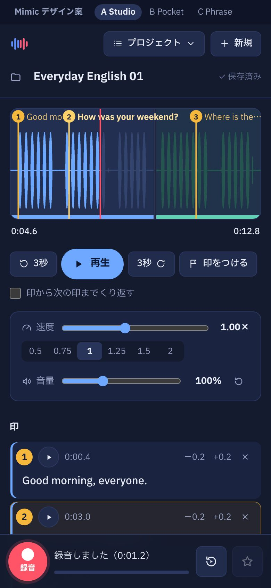
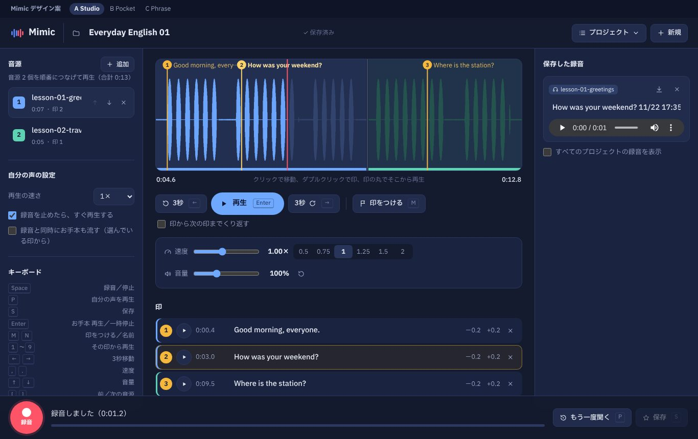
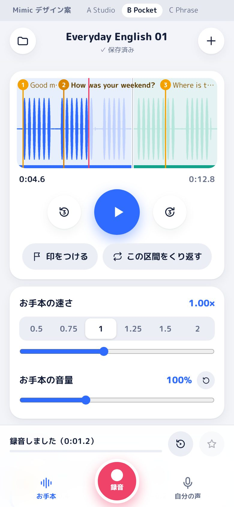
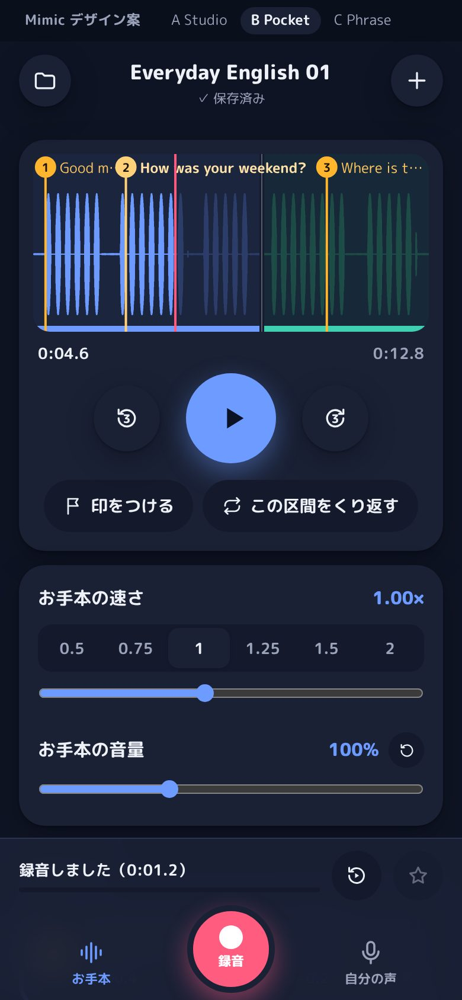
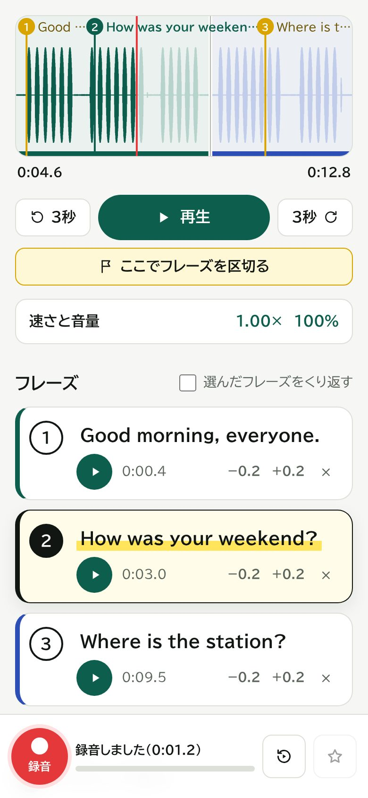
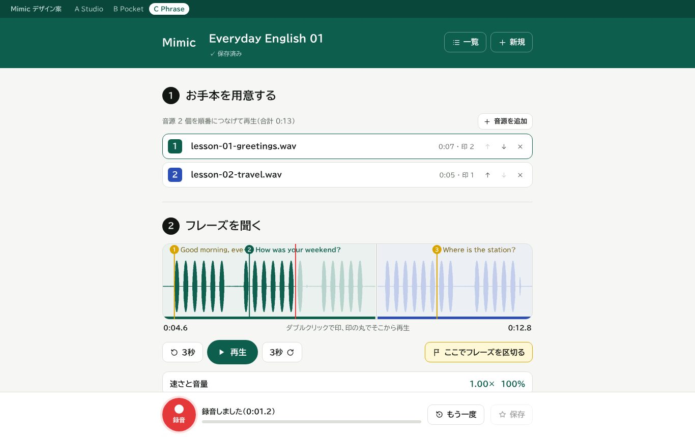

AStudio
パソコンや iPad で、プロジェクトをたくさん作り込む人に
- 波形を大きく真ん中に。音源・設定は左、保存した録音は右にまとめて、1画面で全部見える
- 録音ボタンは画面下に固定。どこまでスクロールしても押せる
- 暗めの配色で、長い時間の作業でも目が疲れにくい
お手本を聞いて、まねして、自分の声と聞き比べる
Speak Back の機能をそのまま使って、見た目と使い勝手だけを変えた3つの案です。 3案とも同じデータを使うので、上のバーで切り替えながら同じプロジェクトで比べられます。 データは Speak Back とは別に保存されます。Speak Back のプロジェクトは「書き出し」したファイルを読み込めば使えます。


パソコンや iPad で、プロジェクトをたくさん作り込む人に


iPhone で、電車の中などで片手で練習する人に


ひとつずつ順番に、フレーズを身につけたい人に
「まねする」「もう一度話す」に関係する名前です。正式に決める前に、商標や App Store での重なりを確認してください。
まねる。日本語の「ミミ（耳）」が入っていて、聞いてまねるアプリだと伝わりやすい。
もう一度話す。何度も言い直す使い方そのものを表す。
「もう一回言って」。会話でもよく使う英語なので、英語学習のアプリらしい。
話した声が、こだまのように返ってくる。
シャドーイングから。英語を学んでいる人には意味がすぐ通じる。